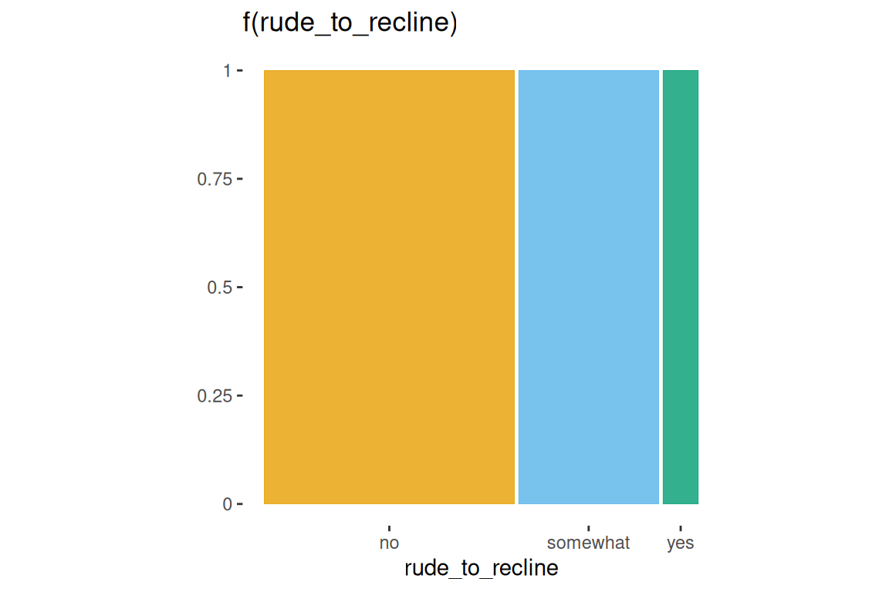
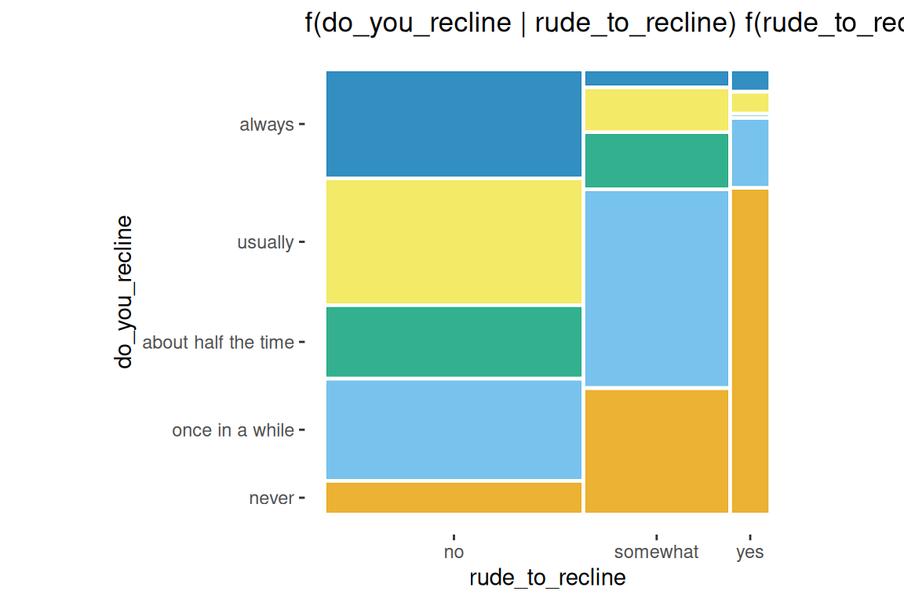
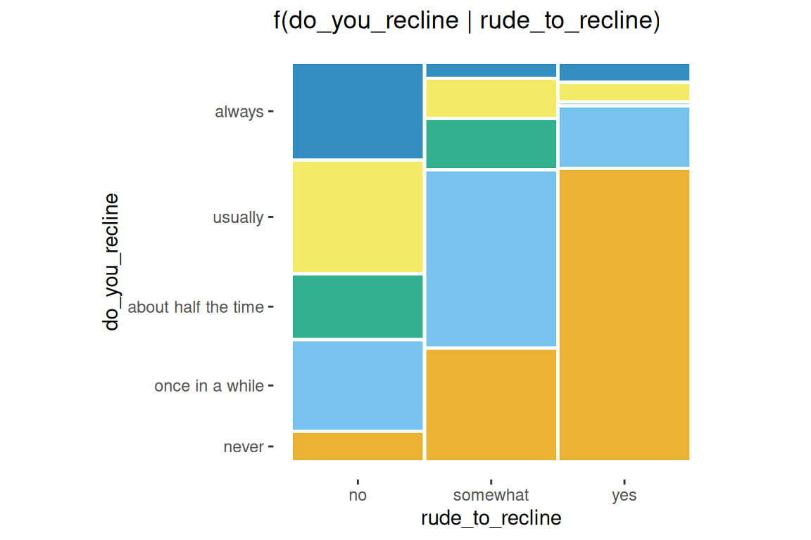
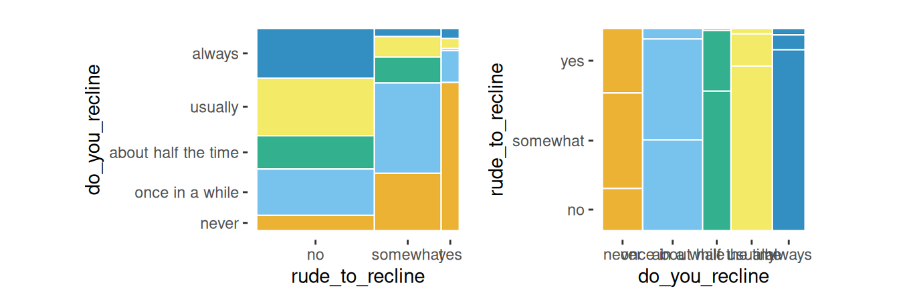
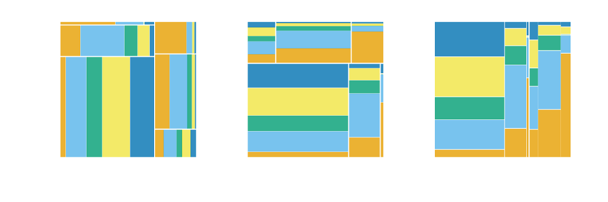
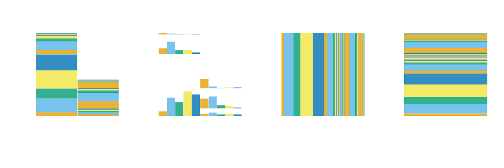
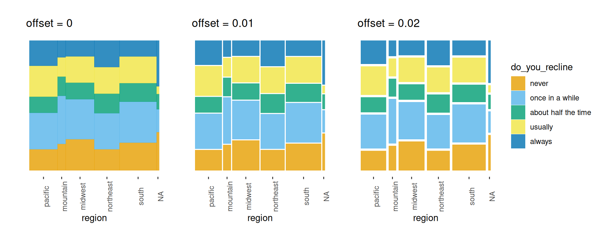

ggplot2
vignettes/ggmosaic.Rmd
ggmosaic.RmdDesigned to create visualizations of categorical data,
geom_mosaic() has the capability to produce bar charts,
stacked bar charts, mosaic plots, and double decker plots and therefore
offers a wide range of potential plots. The plots below highlight the
package’s versatility.
# A few modifications to data
flights <- fly %>%
filter(!is.na(do_you_recline), !is.na(rude_to_recline))
bar_examp <- ggplot(data = flights) +
geom_mosaic(aes(x=product(do_you_recline), fill = do_you_recline), divider="vbar") +
theme(axis.text.x = element_blank(),
axis.ticks.x = element_blank()) +
labs(y="Do you recline?", x = "", title = "Bar Chart")
spine_examp <- ggplot(data = flights) +
geom_mosaic(aes(x=product(do_you_recline), fill = do_you_recline), divider = "vspine") +
theme(axis.text.x = element_blank(),
axis.ticks.x = element_blank()) +
labs(y="Do you recline?", x = "", title = "Spine Plot")
stackbar_examp <- ggplot(data = flights) +
geom_mosaic(aes(x=product(do_you_recline, rude_to_recline), fill = do_you_recline),
divider=c("vspine", "hbar")) +
labs(x="Is it rude to recline?", y = "Do you recline?", title = "Stacked Bar Chart")
mosaic_examp <- ggplot(data = flights) +
geom_mosaic(aes(x = product(do_you_recline, rude_to_recline), fill = do_you_recline)) +
labs(y="Do you recline?", x="Is it rude to recline?", title = "Mosaic Plot (2 variables)")
mosaic2_examp <- ggplot(data = flights) +
geom_mosaic(aes(x=product(eliminate_reclining, do_you_recline, rude_to_recline), fill = do_you_recline, alpha = eliminate_reclining)) +
scale_alpha_manual(values =c(.7,.9)) +
theme(axis.text.x = element_text(angle = 90, hjust = 1, vjust = .5)) +
labs(y="Do you recline?", x="Eliminate reclining?:Is it rude to recline?", title = "Mosaic Plot (3 variables)")
ddecker_examp <- ggplot(data = flights) +
geom_mosaic(aes(x=product(do_you_recline, eliminate_reclining, rude_to_recline), fill = do_you_recline, alpha = eliminate_reclining), divider = ddecker()) +
scale_alpha_manual(values =c(.7,.9)) +
theme(axis.text.x = element_text(angle = 90, hjust = 1, vjust = .5)) +
labs(y="Do you recline?", x="Eliminate reclining?: Is it rude to recline?", title = "Double Decker Plot")
spine_examp + bar_examp + mosaic_examp + stackbar_examp + mosaic2_examp + ddecker_examp + plot_layout(ncol = 2)An assortment of plots made with the ggmosaic package.
Furthermore, ggmosaic allows various features
to be customized:
the order of the variables,
the formula setup of the plot,
faceting,
the type of partition, and
the space between the categories.
To fit ggmosaic within the ggplot2
framework, we must be able to create the formula from the aesthetics
defined in a call. That is, the aesthetics set up the formula which
determines how to break down the joint distribution. The main hurdle
ggmosaic faced is that mosaic plots do not have a
one-to-one mapping between a variable and the x or
y axis. To accommodate the variable number of variables,
the mapping to x is created by the product()
function. For example, the variables var1 and
var2 are read in as x = product(var2, var1).
The product() function alludes to
ggmosaic’s predecessor productplots
and to the joint distribution as the product of the conditional and
marginal distributions. product() creates a list of the
variables and allows for to pass check_aesthetics(), a
ggplot2 internal function, and then splits the
variables back into a data frame for the calculations.
In geom_mosaic(), the following aesthetics can be
specified:
weight: select a weighting variable
x: select variables to add to formula
x = product(var2, var1, ...)
alpha: add an alpha transparency to the selected
variable
x, it will be added to
the formula in the first positionfill: select a variable to be filled
x, it will be added to
the formula in the first position after the optional alpha
variable.conds : select a variable to condition on
conds = product(cond1, cond2, ...)
These values are then sent through repurposed
productplots functions to create the desired formula:
weight ~ alpha + fill + x | conds. Because the plot is
constructed hierarchically, the ordering of the variables in the formula
is vital.
ggplot(data = flights) +
geom_mosaic(aes(x = product(rude_to_recline), fill=rude_to_recline)) +
labs(title='f(rude_to_recline)')
ggplot(data = flights) +
geom_mosaic(aes(x = product(do_you_recline, rude_to_recline), fill=do_you_recline)) +
labs(title='f(do_you_recline | rude_to_recline) f(rude_to_recline)')
ggplot(data = flights) +
geom_mosaic(aes(x=product(do_you_recline), fill = do_you_recline,
conds = product(rude_to_recline))) +
labs(title='f(do_you_recline | rude_to_recline)')
ggplot(data = flights) +
geom_mosaic(aes(x = product(do_you_recline), fill=do_you_recline), divider = "vspine") +
labs(title='f(do_you_recline | rude_to_recline)') +
facet_grid(~rude_to_recline) +
theme(aspect.ratio = 3,
axis.text.x = element_blank(),
axis.ticks.x = element_blank())
order1 <- ggplot(data = flights) +
geom_mosaic(aes(x = product(do_you_recline, rude_to_recline), fill = do_you_recline))
order2 <- ggplot(data = flights) +
geom_mosaic(aes(x=product(rude_to_recline, do_you_recline), fill = do_you_recline))
order1 + order2
geom_mosaic()
Arguments unique to geom_mosaic():
divider: used to declare the type of partitions to
be used
offset: sets the space between the first
spine
Four options available for each partition:
vspine: width
constant, height varies.
hspine: height
constant, width varies.
vbar: height
constant, width varies.
hbar: width
constant, height varies.
part1 <- ggplot(data = flights) +
geom_mosaic(aes(x=product(do_you_recline), fill = do_you_recline)) +
theme(axis.text = element_blank(),
axis.ticks = element_blank()) +
labs(x="", y = "", title = "hspine")
part2 <- ggplot(data = flights) +
geom_mosaic(aes(x=product(do_you_recline), fill = do_you_recline),
divider = "vspine") +
theme(axis.text = element_blank(),
axis.ticks = element_blank()) +
labs(x="", y = "", title = "vspine")
part3 <- ggplot(data = flights) +
geom_mosaic(aes(x=product(do_you_recline), fill = do_you_recline),
divider = "hbar") +
theme(axis.text = element_blank(),
axis.ticks = element_blank()) +
labs(x="", y = "", title = "hbar")
part4 <- ggplot(data = flights) +
geom_mosaic(aes(x=product(do_you_recline), fill = do_you_recline),
divider = "vbar") +
theme(axis.text = element_blank(),
axis.ticks = element_blank()) +
labs(x="", y = "", title = "vbar")
part1 + part2 + part3 + part4 + plot_layout(nrow = 1)mosaic()
mosaic("v")
ddecker()
c("hspine", "vspine", "hbar")
h_mosaic <- ggplot(data = flights) +
geom_mosaic(aes(x = product(do_you_recline, rude_to_recline, eliminate_reclining), fill=do_you_recline), divider=mosaic("h")) +
theme(axis.text=element_blank(), axis.ticks=element_blank()) +
labs(x="", y="")
v_mosaic <- ggplot(data = flights) +
geom_mosaic(aes(x = product(do_you_recline, rude_to_recline, eliminate_reclining), fill=do_you_recline), divider=mosaic("v")) +
theme(axis.text=element_blank(), axis.ticks=element_blank()) +
labs(x="", y="")
doubledecker <- ggplot(data = flights) +
geom_mosaic(aes(x = product(rude_to_recline, eliminate_reclining), fill=do_you_recline), divider=ddecker()) +
theme(axis.text=element_blank(), axis.ticks=element_blank()) +
labs(x="", y="")
h_mosaic + v_mosaic + doubledecker + plot_layout(nrow = 1)
mosaic4 <- ggplot(data = flights) +
geom_mosaic(aes(x = product(do_you_recline, rude_to_recline, eliminate_reclining), fill=do_you_recline), divider=c("vspine", "vspine", "hbar")) +
theme(axis.text=element_blank(), axis.ticks=element_blank()) +
labs(x="", y="")
mosaic5 <- ggplot(data = flights) +
geom_mosaic(aes(x = product(do_you_recline, rude_to_recline, eliminate_reclining), fill=do_you_recline), divider=c("hbar", "vspine", "hbar")) +
theme(axis.text=element_blank(), axis.ticks=element_blank()) +
labs(x="", y="")
mosaic6 <- ggplot(data = flights) +
geom_mosaic(aes(x = product(do_you_recline, rude_to_recline, eliminate_reclining), fill=do_you_recline), divider=c("hspine", "hspine", "hspine")) +
theme(axis.text=element_blank(), axis.ticks=element_blank()) +
labs(x="", y="")
mosaic7 <- ggplot(data = flights) +
geom_mosaic(aes(x = product(do_you_recline, rude_to_recline, eliminate_reclining), fill=do_you_recline), divider=c("vspine", "vspine", "vspine")) +
theme(axis.text=element_blank(), axis.ticks=element_blank()) +
labs(x="", y="")
mosaic4 + mosaic5 + mosaic6 + mosaic7 + plot_layout(nrow = 1)
ggmosaic adopts the procedure followed by Hartigan and Kleiner, Friendly, Theus and Lauer, and Hofmann, where an amount of space is allocated for each of the splits, with subsequent divisions receiving a smaller amount of space. The created spaces preserve the impact of small counts. The effect becomes immediately apparent when an empty group is included. In this case, the gaps between the categories, which are empty, create an empty space.
offset: Set the space between the first spine
default is 0.01
space between partitions decreases as layers build
offset1 <- ggplot(data = flights) +
geom_mosaic(aes(x = product(do_you_recline, region), fill=do_you_recline)) +
labs(y = "", title=" offset = 0.01") +
theme(axis.text.y=element_blank(),
axis.ticks.y=element_blank(),
axis.text.x = element_text(angle = 90))
offset0 <- ggplot(data = flights) +
geom_mosaic(aes(x = product(do_you_recline, region), fill=do_you_recline), offset = 0) +
labs(y = "", title=" offset = 0") +
theme(axis.text.y=element_blank(),
axis.ticks.y=element_blank(),
axis.text.x = element_text(angle = 90))
offset2 <- ggplot(data = flights) +
geom_mosaic(aes(x = product(do_you_recline, region), fill=do_you_recline), offset = 0.02) +
labs(y="", title=" offset = 0.02") +
theme(axis.text.y = element_blank(),
axis.ticks.y=element_blank(),
axis.text.x = element_text(angle = 90),
legend.position = "right")
offset0 + offset1 + offset2 + plot_layout(ncol = 3)
geom_mosaic() is no longer compatible with
ggplotly()
Since the initial release of ggmosaic, ggplot2 has evolved considerably. And as ggplot2 continues to evolve, ggmosaic must continue to evolve alongside it. Although these changes affect the underlying code and not the general usage of ggmosaic, the general user may need to be aware of compatibility issues that can arise between versions. The table below summarizes the compatibility between versions.
| ggmosaic | ggplot2 | Axis labels | Tick marks |
|---|---|---|---|
| 0.3.3 | 3.3.3 | x | x |
| 0.3.0 | 3.3.0 | x | x |
| 0.2.2 | 3.3.0 | Default labels are okay, but must use
scale_*_productlist() to modify |
No tick marks |
| 0.2.2 | 3.2.0 | Default labels okay, but must use
scale_*_productlist() to modify |
x |
| 0.2.0 | 3.2.0 | Default labels are wrong, but can use labs() to
modify |
x |